Details
What information helps Signal respond with a useful answer instead of a generic reply.
Contact / 01
Contact opens as a clear telecommunications decision hub: what Signal offers, who it helps, why it matters, and which route to take first.
The first screen combines positioning, proof, primary action, and fast internal navigation, so people can act immediately or compare the rest of the contact route with context.
Black full-bleed coverage hero
Select the closest route and Signal keeps the next step, proof, and follow-up expectation aligned with availability and reliability.
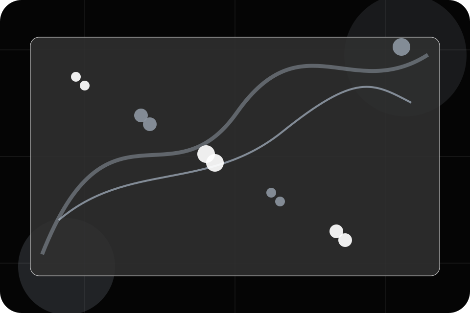
Contact / 02
Sales makes the contact path concrete: what to send, how the response works, and what Signal needs before visitors check coverage.
The section reduces contact friction by naming the channel, expected detail, privacy path, and response expectation instead of dropping visitors into a generic form.
Check Coverage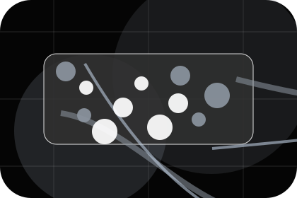
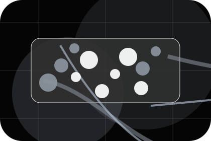
What information helps Signal respond with a useful answer instead of a generic reply.
Contact / 03
Help makes the contact path concrete: what to send, how the response works, and what Signal needs before visitors check coverage.
The section reduces contact friction by naming the channel, expected detail, privacy path, and response expectation instead of dropping visitors into a generic form.
Open ContactWhat information helps Signal respond with a useful answer instead of a generic reply.
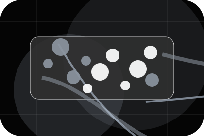
How the visitor should think about response, urgency, location, or availability.
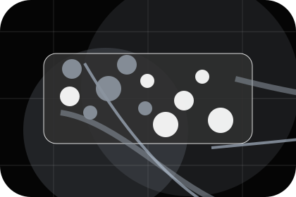
The expected next message keeps scope, timing, and the first practical step clear.
Contact / 04
Billing makes the contact path concrete: what to send, how the response works, and what Signal needs before visitors check coverage.
The section reduces contact friction by naming the channel, expected detail, privacy path, and response expectation instead of dropping visitors into a generic form.
Check CoverageWhat information helps Signal respond with a useful answer instead of a generic reply.
How the visitor should think about response, urgency, location, or availability.
The expected next message keeps scope, timing, and the first practical step clear.
Contact / 05
Address makes the contact path concrete: what to send, how the response works, and what Signal needs before visitors check coverage.
The section reduces contact friction by naming the channel, expected detail, privacy path, and response expectation instead of dropping visitors into a generic form.
Check CoverageWhat information helps Signal respond with a useful answer instead of a generic reply.
How the visitor should think about response, urgency, location, or availability.
The expected next message keeps scope, timing, and the first practical step clear.
Contact / 06
Phone makes the contact path concrete: what to send, how the response works, and what Signal needs before visitors check coverage.
The section reduces contact friction by naming the channel, expected detail, privacy path, and response expectation instead of dropping visitors into a generic form.
Check CoverageWhat information helps Signal respond with a useful answer instead of a generic reply.
How the visitor should think about response, urgency, location, or availability.
The expected next message keeps scope, timing, and the first practical step clear.
Contact / 07
Hours makes the contact path concrete: what to send, how the response works, and what Signal needs before visitors check coverage.
The section reduces contact friction by naming the channel, expected detail, privacy path, and response expectation instead of dropping visitors into a generic form.
Check Coverage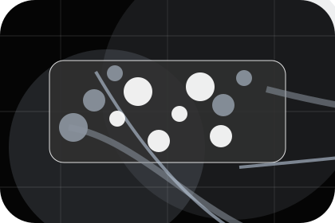
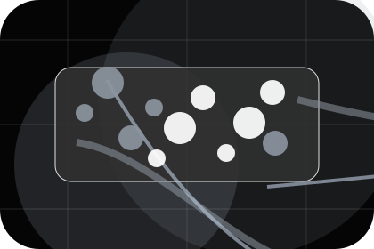
What information helps Signal respond with a useful answer instead of a generic reply.
Contact / 08
WhatsApp makes the contact path concrete: what to send, how the response works, and what Signal needs before visitors check coverage.
The section reduces contact friction by naming the channel, expected detail, privacy path, and response expectation instead of dropping visitors into a generic form.
Check CoverageWhat information helps Signal respond with a useful answer instead of a generic reply.
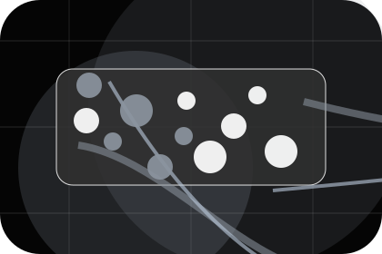
How the visitor should think about response, urgency, location, or availability.
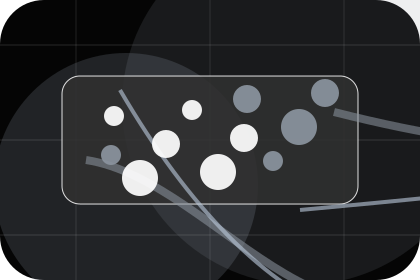
The expected next message keeps scope, timing, and the first practical step clear.
Contact / 09
Map makes the contact path concrete: what to send, how the response works, and what Signal needs before visitors check coverage.
The section reduces contact friction by naming the channel, expected detail, privacy path, and response expectation instead of dropping visitors into a generic form.
Check CoverageWhat information helps Signal respond with a useful answer instead of a generic reply.
How the visitor should think about response, urgency, location, or availability.
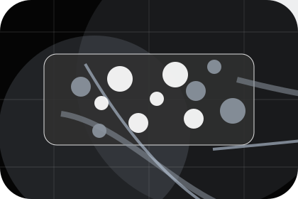
The expected next message keeps scope, timing, and the first practical step clear.
Contact / 10
Signal closes the contact route with a clear action, a quick reminder of the value, and a low-friction way to check coverage.
Visitors who are ready can use the primary action. Visitors who are still comparing can scan the section links, proof, and support routes before they check coverage.
Check CoverageThe final block keeps the choice simple: act now, compare one more proof route, or send enough detail for a focused response.
Check Coverage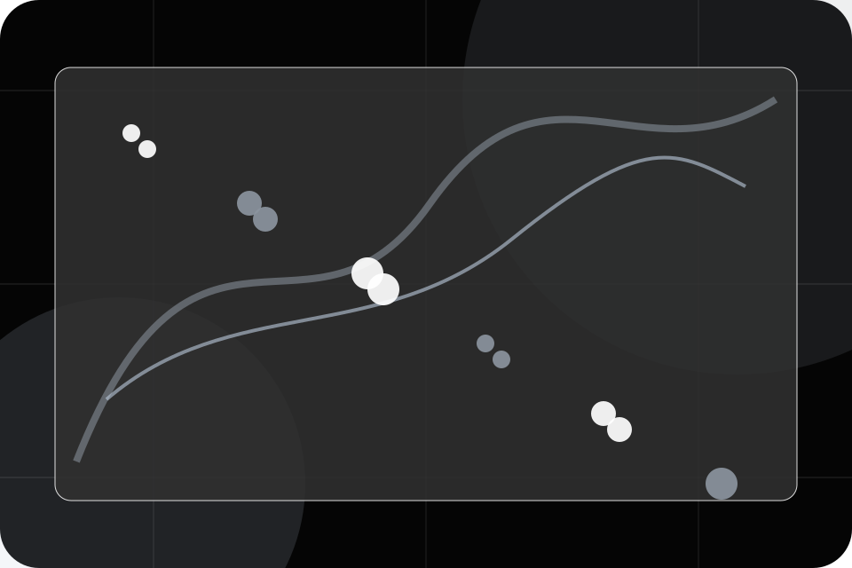
availability and reliability
A coverage-first telecom site with stark dark hero, satellite-map panels, speed proof, and direct address checking. Contact ends with a direct path to check coverage, plus enough context for visitors who still need to compare.
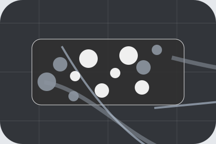
Check CoverageInformation is provided for planning and should be reviewed for the final client, location, and operating rules.